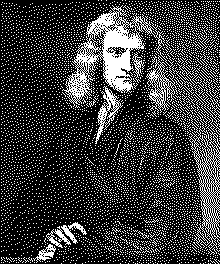

| годы жизни | 1643–1727 |
| страна | Англия · Кембридж |
| область | механика · математика · оптика · алхимия · теология |
| главное | закон всемирного тяготения · исчисление · Principia Mathematica |
| характер | затворник · мстительный · алхимик · одинокий гений |
Человек который придумал физику за чумной год.
22 года. 18 месяцев в одиночестве. исчисление, оптика, гравитация.
В 1665 году в Кембридже закрыли университет из-за чумы1. Ньютону было 22 года. Он уехал домой в Вулсторп. Следующие 18 месяцев он провёл в одиночестве.
За это время он изобрёл дифференциальное исчисление. Открыл разложение в биномиальный ряд. Провёл опыты с призмой — белый свет состоит из цветов. И начал думать о гравитации.
Яблоко? Возможно. Ньютон сам рассказывал эту историю. Но смысл не в яблоке. Смысл в вопросе: почему та же сила которая тянет яблоко вниз не даёт Луне упасть на Землю?
Луна падает. Просто она движется достаточно быстро чтобы всё время промахиваться мимо Земли. Это и есть орбита.
Ньютон не публиковал эти результаты 20 лет. В 1684 году к нему пришёл астроном Галлей и спросил: по какой кривой движется планета если сила тяготения обратно пропорциональна квадрату расстояния? Ньютон ответил немедленно: по эллипсу. Галлей спросил откуда он знает. Ньютон сказал что вычислил. Бумаги потеряны. Пересчитал заново. Так появилась «Principia» (1687)2.
«Математические начала натуральной философии» — одна из величайших научных книг в истории. Три закона механики. Закон всемирного тяготения. Доказательство законов Кеплера из первых принципов. Всё это — на латыни, в стиле Евклида: аксиомы и теоремы.
«Если я видел дальше других — то лишь потому что стоял на плечах гигантов.» — Исаак Ньютон · письмо Роберту Гуку · 1676
Параллельно Лейбниц независимо изобрёл исчисление. Его нотация (dy/dx, ∫) лучше ньютоновской — мы используем её сегодня. Ньютон решил что Лейбниц украл идею. Спор3 длился 30 лет. Разделил математиков Европы на два лагеря. Сегодня историки считают: независимое открытие. Ньютон был первым. Лейбниц — лучше сформулировал.
Ньютон был странным человеком. Никогда не был женат. Мало спал. Забывал есть. 30 лет провёл за алхимическими опытами4 — искал философский камень. Написал больше текстов по теологии чем по физике. Управлял Монетным двором и беспощадно преследовал фальшивомонетчиков.
На надгробии в Вестминстерском аббатстве написано: «Здесь покоится Исаак Ньютон, который почти божественной силой разума первым объяснил движения и формы планет, пути комет и приливы океанов.»